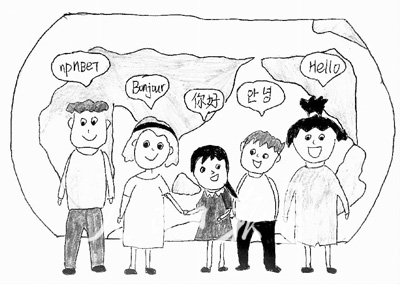

互惠动态
|
|
尽早跳出“中文圈子”
海外学子中的“圈子”现象一直存在。当中国学生踏上异国他乡，进入校园后，迈出“中文圈子”就成了艰难的必修课。
只身在外，由于语言、生活习惯的差异，以及对陌生环境的不适应，也会很自然地形成“圈子”。这个“圈子”里一般以中国人为主，不妨称其为“中文圈子”，简单说就是以“讲中文”为纽带的交友圈。

“中文圈子”常有
当被问及“身边是否有‘中文圈子’”时，大多数留学生的回答是肯定的。“我初到美国时，英语的听力水平比较差，有时候听不懂外国人在说什么，和中国人在一起比较有安全感。”李薇（化名）说。她刚从美国印第安纳大学伯明顿分校毕业，准备继续读研。正在美国俄克拉荷马州立大学读大三的蒲林枫也表示，自己初到美国的第一个圈子也是“中文圈子”。刚到美国时，人生地不熟，一些同样来自中国的学姐学长热心地帮助他，所以自然就和他们成为了朋友。
李佳豪目前在美国俄亥俄州立大学读书，他刚到学校时，对于全英语的教学模式不太适应。由于中国学生的学习方法、思维模式类似，所以很自然地和中国学生来往，形成了“中文圈子”。
大着胆子跳出
李薇说：“大家不愿意和外国人交流的最主要原因还是语言的问题。”由于害怕出错，一部分中国留学生就会选择少说。但其实大部分美国人十分热心，当你遇到语言困难时，他们会积极地给予帮助。
其实美国人也有自己的生活“圈子”、交友“圈子”，如果你不能大胆地迈出“中文圈子“，就很难融入美国人的“圈子”中，也难以体会真正的美国文化。李薇表示：“其实美国是一个移民国家，他们并不排斥你接近他们的‘圈子’，关键在于敢说、敢做。”
“我现在有中外两个交友‘圈子’，反倒是‘中文圈子’比较小。因为我喜欢并且主动地和外国人交流，现在结识了很多美国朋友、欧洲朋友、墨西哥朋友。”蒲林枫说。他现在和外国朋友相处得非常融洽。每周四晚上，他们都会一起去参加派对，周六还会一起出去烧烤、钓鱼或者打猎。在和外国朋友的相处中，他亲身感受不同的生活方式，体会到不同的文化风格。
选择优秀从之
当你大着胆子，跳出安逸的“中文圈子”，同外国人轻松交流后就会发现他们独有的做事风格、思维方式。你可以比较学习，择优从之。
“因为我们和外国人所受教育的形式、内容和成长环境不同，所以在处理一些事情时方法很不相同。方法没有绝对的好坏，但是通过比较，自己可以多一种选择。”蒲林枫说，“比如，我和我的美国室友去吃饭或者买东西的时候，大家都是自己买自己的。账目、花销算得很清楚，这样让大家心里都很舒服。”
不少留学生提到，美国人热情的性格最吸引人。这种热情体现在和陌生人的交往上。“初来学校，校园很大，我的行李很多，好多老外特别热心地主动帮我搬行李。”李薇说。这种热情也体现在生活上，比如他们非常喜欢户外运动，喜欢办派对、野炊等。在与朋友的交往上同样如此，他们总是很热情地与你沟通，当你说得很慢或者不太会说的时候，他们也会耐心地听你说完。
中国学生赴美留学，在异国他乡，听见中文或看见黄皮肤、黑头发的人，会产生一种莫名的亲切感。在“中文圈子”中，他们会获得安全感、归属感，排遣独在异乡的孤独和寂寞。相同的文化背景下，有些情感、行为彼此更容易理解。但是若一味地沉浸在“中文圈子”带来的安全与舒适之中，则不利于留学生的个人发展。既然选择负笈海外，就应该努力从“中文圈子”里跳出来，多和外国人交流，体验文化差异，让不同文化在碰撞中擦出美丽的火花。
而在未出国之前怎么准备，才能更快跳出“中文圈”，更好地融入当地的学习生活圈呢？
听听在美国哥伦比亚大学的李强（化名）怎么说：当时我读的是南京市比较好的高中，班级里有很多同学都是准备高中之后出国的，当然我也不例外。也各种准备美国那边学校的申请，而我最想去的还是哥伦比亚大学。哥伦比亚大学大家都知道，该校录取率向来比较低。很多SAT2300+，获得过不少奖项的学生申请时也会随意被拒。而我成功被录取了，其中的艰辛也是可想而知的。现在我在这边已经半年了，生活和学习都比较适应，我之所以很快能够适应这边的圈子，不得不说很感谢我家的互惠生。当时，我妈妈考虑到我以后出国，担心我会不适应，就帮忙请了个美国的互惠生到家里来。让我提前适应美国的一些生活和学习环境，虽然不是完全置于美国学生的生活模式，但是我觉得对我的帮助还是很大的，不至于刚进入美国学习就是完全懵的状态。

关于互惠，您了解得够多么？
请外国学生来家庭照顾孩子，辅导孩子外语？
只了解这些是不够的！
获取更多信息请参考以下方式：
联系ASC：
电话：86-21-61116069(上海中心）
86-25-66065662（南京中心）
手机：15601666586（可加微信）
Q Q：3259637585
微信：asc-center
邮箱：info@asc-center.com
网站：www.asc-aupair.com
网站：www.asc-aupair.com

感谢您对我们的关注